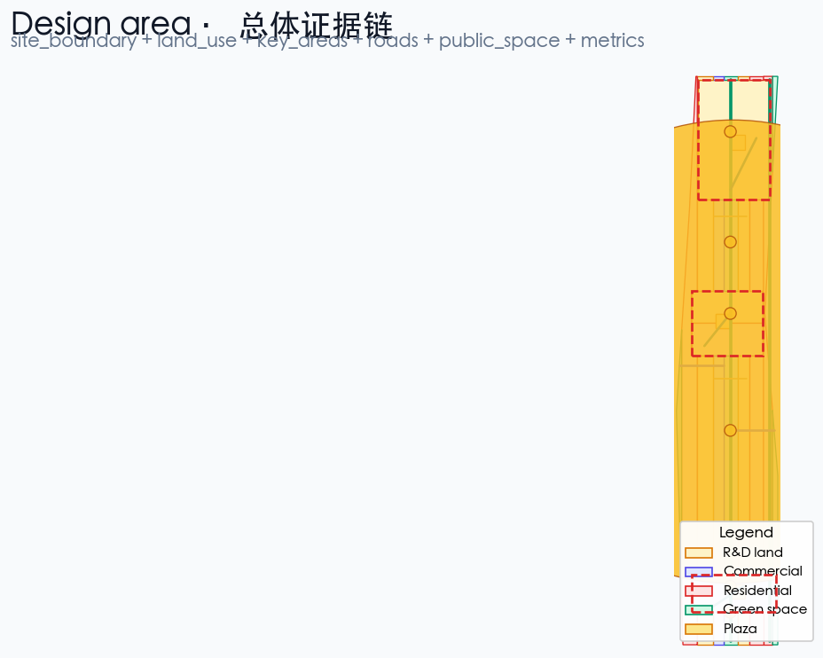
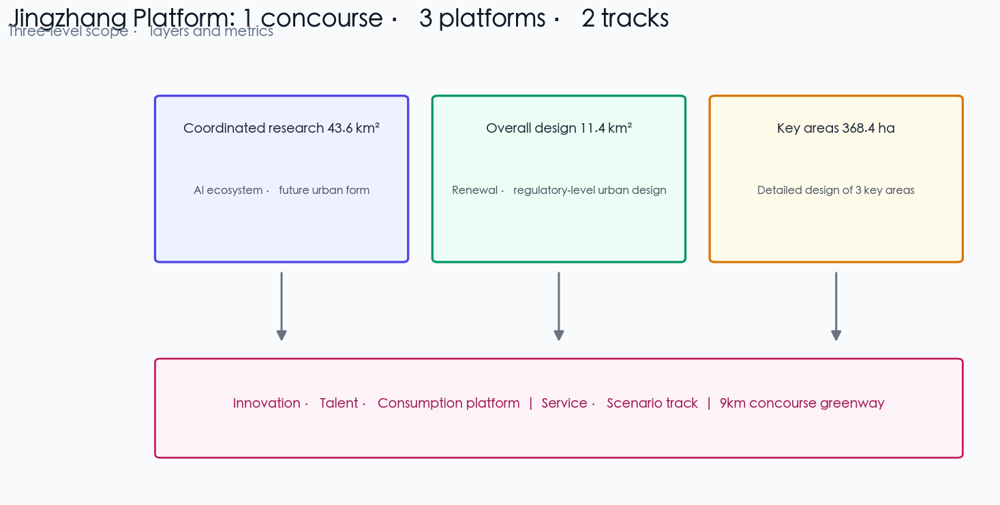
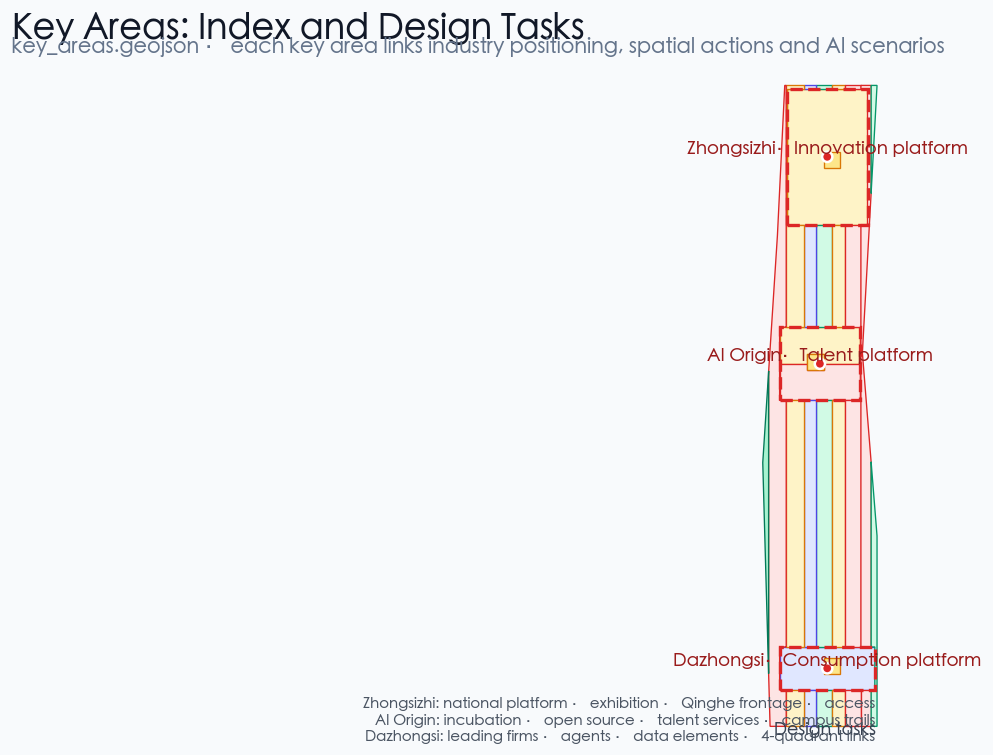
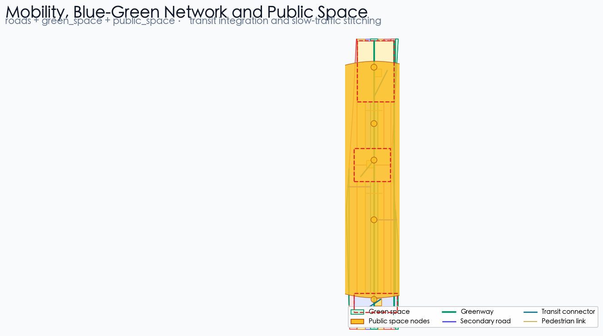
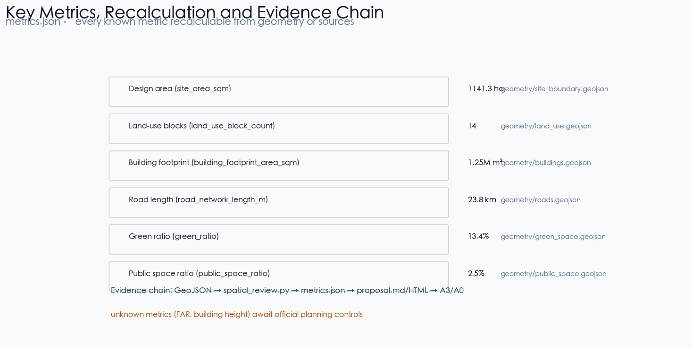

JINGZHANG PLATFORM: Turning a Centennial Station Platform into an Open Platform for the AI Era — Urban Design Proposal for the Centennial Jingzhang AI Innovation Belt
Formal AI urban design proposal package generated on the provisional boundary with structured self-check requirements; precision warnings and recalculation obligations are retained, while organizer-side data gaps do not block content scoring.
JINGZHANG PLATFORM: Turning a Centennial Station Platform into an Open Platform for the AI Era — Urban Design Proposal for the Centennial Jingzhang AI Innovation Belt
Design Basis and Source List
This formal proposal takes the Announcement on the Prequalification of the International Urban Design Solicitation for the Centennial Jingzhang AI Innovation Belt issued by the Haidian Sub-bureau of the Beijing Municipal Commission of Planning and Natural Resources as its primary basis, and uses the maintainer-registered provisional coarse boundary, key areas, enumerations, metrics, and source list in brief/site-package/ as its machine-readable basis. Before generating a proposal, an AI agent must read design_brief.json, allowed_design_space.json, sources.json, enums/, ranges/, schemas/, data/source_registry.json, and data/processed/agent_fact_pack.md, and must use project_scope_summary.csv, agent_task_requirements.csv, source_use_matrix.csv, and missing_data_checklist.csv to build the task, scope, source-usage, and gap checklists. Every design judgment must be decomposed into traceable sources, recalculable metrics, verifiable layers, and manually reviewable assumptions. The announcement requires the proposal to reach the urban-design depth of a regulatory detailed plan and of a comprehensive implementation plan, so narrative text cannot substitute for GeoJSON, metric tables, the A3 booklet, the A0 boards, or the HTML electronic presentation.
This proposal is not a standalone vision document; it organizes deliverables from the announcement, the agent-facing task book, and the site package. This section places only the most critical evidence beside the judgments 来源 来源 深度. Full source and standard coverage is stored in sources.json, standard_matrix.json, and design_depth_matrix.json, and is not repeated as a machine index in the text.
The usage boundaries of the source registry are as follows 来源:
data/source_registry.jsonregisters the usage boundaries of public, cleared, and provisional materials.- Current registration summary: 5 items formally usable, 0 background items, 1 provisional-only item.
- Agents must not upgrade
background_onlyorprovisional_onlymaterials into official boundaries, statutory regulatory plans, formal scoring bases, or government implementation commitments.
data/processed/agent_fact_pack.md is the reading-navigation layer of this proposal, not a new authoritative source 来源. It helps agents organize the three-level scope, the three key areas, the announcement tasks, agent.1–agent.6, data availability, and missing-data items into a readable proposal; factual judgments must still return to the registered primary materials 来源 来源, and the full source relationships are kept in sources.json.

Because the official SITE_BOUNDARY or the three KEY_AREA polygons are not yet available, this scaffold uses brief/site-package/geometry/provisional_boundaries.geojson to generate the temporary formal package. The geometry/site_boundary.geojson and geometry/key_areas.geojson files in the submission package must both be labeled provisional_constraint with official_boundary=false; they may only be used for proposal generation, self-check, visualization, and design discussion, and not as official redlines, approval bases, precise area bases, or statutory control conclusions. This organizer-side data gap does not itself block content scoring; after the official polygons are replaced, site boundary, key areas, land use, roads, green space, public space, buildings, phasing, and metrics must all be recalculated.
The scorable status generated by this scaffold is: provisional boundary, precision warnings retained, to be recalculated after official data is published; content scoring is not blocked. Accordingly, the spatial structure, scenarios, projects, and metrics in the text are written under the principle of "discussable, reviewable, recalculable after official boundary replacement"; when the official boundary and key-area polygons are updated, the agent must rerun the scaffold, the self-checks, and the drawing/HTML generation — it must not replace only a single file.
Boundary interpretation can return to the overall scope layer and area recalculation 空间数据 指标. The three key areas are cross-checked by independent layers and count metrics 空间数据 指标. This means readers can move from the text into the evidence without first reading a string of machine identifiers.
Three-Level Scope Framework
The proposal organizes work at the three levels defined by the announcement: the coordinated research scope covers the 43.6 km² AI industry ecology, strategic positioning, innovation chain, and future urban form; the overall design scope covers the 11.4 km² urban and industrial areas within 1–2 km around the Jingzhang Heritage Park, requiring an overall urban renewal framework, industrial spatial layout, transport and municipal support, and urban character control; the key-area scope covers 368.4 hectares of three detailed-design areas, requiring clear functional programs, building scale, retain/renovate/demolish classification, public space connectivity, and transport organization. The three levels are mapped task by task in compliance_matrix.json so that every mandatory task in announcement items 1.3, 1.4, 1.5 and agent.1–agent.6 has chapter, layer, metric, drawing, and HTML evidence.
The depth of the three-level framework is governed by 深度 and 深度; spatial evidence is anchored by 空间数据 and 空间数据; task basis follows 标准; and the scope index follows the three-level scope table in project_scope_summary.csv in 来源.

The three levels are not a set of disconnected drawings. Coordinated research decides the industry chain and urban form judgments; overall design implements those judgments into renewal projects, spatial structure, and facility capacity; key-area detailed design verifies the implementability of specific plots, buildings, transport, public space, and AI application scenarios. When generating a proposal, the agent must first lock the official or provisional boundary and constraints adopted by the current submission, then generate land use, buildings, roads, green space, public space, phasing, and AI service nodes, and finally recalculate metrics from those layers and explain in the text which conclusions remain limited by the provisional boundary. Any area, ratio, scale, or project count that cannot be recalculated from structured data must not be written as a formal conclusion.
The overall concept proposed by this plan is the "JINGZHANG PLATFORM": the semantics of the centennial Jingzhang Railway "station platform" (站台) are translated into the AI-era "open platform" (平台), forming the spatial organization of "one corridor, three platforms, two tracks." The one corridor is an approximately 9 km north–south greenway corridor along the Jingzhang Heritage Park, serving as the historical and public-space spine 深度; the three platforms correspond to the three key areas — Zhongzhiyuan Innovation Platform, AI Origin Talent Platform, and Dazhongsi Consumption Platform — each with its own functional program, public space, and rail interchange node 空间数据 空间数据 空间数据; the two tracks are the Zhongguancun Service Rail (western industry-service composite belt) and the Xiaoyue River Scenario Rail (eastern scenario-R&D and living belt), implemented respectively by 空间数据 and 空间数据, and by 空间数据 and 空间数据. The naming and logo visual system uses "Platform" as the identifying symbol: a station platform is a place of waiting, meeting, and departure; an open platform is a place of openness, collaboration, and contribution — both share the single English word platform, forming a naming system that can be developed further. The "one corridor" is not an extra redline drawn on top of the plan; it translates the three-level scope of the announcement into a working method. The "three platforms" correspond to the three key areas. The "two tracks" correspond to operable nodes of AI-plus-public services, industry services, and urban life. The three-level imagery of "station-platform – platform – open platform" maps to the linkage of slow traffic, green space, public space, and activity routes.
| Level | Design question | Proposal answer | Data anchor |
|---|---|---|---|
| Coordinated research scope | How to organize the AI industry ecology and future urban form | Build the innovation chain "university incubation – open-source collaboration – enterprise transformation – public experience – international communication" | compliance_matrix.json, standard_matrix.json |
| Overall design scope | How to map industry space, urban renewal, transport/municipal, and character | Land use, building, road, green space, public space, and phasing layers together | 空间数据, 空间数据 |
| Key-area scope | How the three areas reach detailed-design depth | Respective positioning, spatial actions, AI scenarios, and implementation dependencies | 空间数据, 空间数据, 空间数据 |
Coordinated Research Area: Industry and Future City Research
The core task of the coordinated research scope is to build a world-class AI innovation ecosystem. The proposal should inventory Haidian's universities and institutes, leading enterprises, computing/algorithms/data-element resources, incubation platforms, listed companies, unicorns, and science-and-technology service resources, and propose a spatial coordination framework for the AI innovation chain, industry chain, talent chain, and urban service chain. The naming scheme and logo design should serve the overall recognizability of "the Centennial Jingzhang culture belt, the urban AI-life experience belt, and the AI-integration innovation belt" — not slogan-level, but articulated with the industry ecology, public space, and cultural resources. The agent-facing task book also requires responses to the "five functions" and the "three districts, two wings" coordination, forming a developable naming system, visual identity, overall spatial structure map, scenario opening, and operation mechanism; this section must use 来源 and 标准 to mark that these requirements come from the agent open-call tasks, not from statutory planning controls.
Coordinated research does not add pseudo-precise redlines; it ties back to the visible, reviewable spatial structure through the coordination of urban character, public space, and building layout required by 标准, anchored to 空间数据, 空间数据, and 深度.
The future urban form study should answer how AI changes work, life, social interaction, learning, transport, and public services. The proposal should implement AI transport systems, continuous green space, innovation service facilities, and an international work-life atmosphere as locatable functional zones, nodes, corridors, and scenarios — not as a vague technology vision. The agent should write industry strategy metrics, the AI innovation index, talent density, spatial supply types, and AI-plus-vertical-application key areas into the metrics system, and mark which are official, which are design suggestions, and which still await official data calibration. If global AI innovation events, developer communities, open scenarios, or pilgrimage routes are proposed, they must be written as "conceptual suggestions / reference proposals / for professional teams to develop further," and must not be written as confirmed government activities or implementation arrangements.
Overall Design Area: Urban Renewal and Regulatory-Plan-Level Urban Design
The overall design area must reach the urban design depth of a regulatory detailed plan. The proposal must provide the overall spatial structure of urban renewal, identification of underutilized space, a renewal project list, implementation policy recommendations, industry functional ratios, spatial organization patterns, total building scale, and comprehensive carrying-capacity assessment. geometry/land_use.geojson must completely cover the design boundary with no overlaps, geometry/buildings.geojson must express renewed or retained building footprints, geometry/roads.geojson must express microcirculation, slow traffic, and rail interchange, and metrics.json must recalculate core areas, ratios, and layer counts.
This section decomposes regulatory-plan-level content into reviewable objects per 标准: 空间数据 expresses the land-use structure, 空间数据 expresses building footprints, 空间数据 expresses transport organization, 指标 verifies building footprint area, and 深度 and 深度 govern the depth of deliverables.
The overall design must also support transport, rail, municipal, and supporting facilities. The proposal should propose spatial layout and implementation paths for rail-station integration, road microcirculation, bicycle parking, parking supply, innovation service platforms, talent living services, new infrastructure, distributed energy, and on-device computing. Content involving building height, development intensity, road redlines, setbacks, and facility standards, where no official control conditions exist, must be written as "pending official regulatory-plan conditions," and agent-surmised values must not masquerade as approved indicators.
Detailed Design of Key Areas
Key-area detailed design is mandatory. Zhongzhiyuan AI Self-Innovation Acceleration Area should propose detailed schemes around national AI platforms, full-stack self-innovation, standard setting, safety governance, industry exhibition, external transport, Qinghe culture, low-carbon green innovation environments, and AI scenarios in green space. Beijing AI Origin Community should propose detailed schemes around university-adjacent innovation, achievement incubation and transformation, a talent special zone, the open-source system, brand activities, building retain/renovate/demolish, achievement release and display, living support, campus-park slow-traffic connections, and rail-station integration. Dazhongsi AI Industry Cluster Area should propose detailed schemes around leading enterprises, agents, smart terminals, content consumption, data elements, digital assets, commercial services, composite use of planned green space, Dazhongsi station integration, and four-quadrant pedestrian connectivity at the intersection.
The detailed design of the three key areas must cite 空间数据, 空间数据, and 空间数据, and is checked by 深度 for comprehensive-implementation-plan depth. Descriptions that only say "build a demonstration area" without function, building, transport, public space, and implementation project evidence are treated as incomplete.

The three key areas must appear in geometry/key_areas.geojson. If the repository provides official polygons, use them as official_constraint; if official polygons are missing, provisional_constraint may be used temporarily, but the text, HTML, sources, assumptions, and self-check must state that it cannot serve as a formal scoring or approval basis. compliance_matrix.json must separately cover announcement items 1.5.3.1, 1.5.3.2, and 1.5.3.3. The design expression must include functional programs, building scale, building form, retain/renovate/demolish classification, the public space system, transport organization, slow-traffic connectivity, and implementation projects. The HTML page must allow switching between the three key areas, and the A3 booklet and A0 boards must include at least key-area general plans, local details, and metric notes.
| Key area | Design positioning | Spatial actions | AI industry and operation scenarios | Evidence |
|---|---|---|---|---|
| Zhongzhiyuan AI Self-Innovation Acceleration Area | Garden-type full-stack self-innovation block | Strengthen the Qinghe interface, industry exhibition, low-carbon innovation exchange, and external transport; carry open testing and standard-governance display in green space | Proprietary model testing, standard-setting workshops, safety governance display, low-carbon computing experience | 空间数据, 深度 |
| Beijing AI Origin Community | University-adjacent transformation and talent community | Organize campus-park-block slow-traffic stitching; add achievement release, talent service, living, and open-source collaboration space | Open-source community, achievement release, talent special-zone service, university-adjacent incubation | 空间数据, 来源 |
| Dazhongsi AI Industry Cluster Area | Urban smart-economy and international-exchange block | Around Dazhongsi station integration, four-quadrant pedestrian connectivity, commercial services, and public-environment renewal around leading enterprises | Agent and smart-terminal display, content consumption, data elements, international roadshows | 空间数据, 指标 |
AI Innovation Ecosystem, Personas, and AI+ Scenarios
The proposal should build spatial demand personas for AI talent and enterprises, covering R&D offices, open-source collaboration, achievement release, enterprise services, talent housing, social learning, consumption and life, sports and leisure, and international exchange. AI+ scenarios should follow the announcement's directions of transport, services, consumption, healthcare, education, law, and life services, forming both industry-development scenarios and AI-empowered urban-function scenarios. Each scenario must state its service object, spatial location, data sources, privacy boundaries, human-review mechanism, and operating entity.
AI scenarios must land on spatial and governance boundaries: public-space scenarios cite 空间数据, slow-traffic and transport scenarios cite 空间数据, and open-space scenarios cite 空间数据, 指标, and 指标. These citations let reviewers see that scenarios are design objects in concrete layers and metrics, not slogans. The agent-facing task book requires no fewer than 10 AI scenario cards, no fewer than 3 industry test-and-validation scenarios, and no fewer than 5 persona classes; the scaffold only provides the structure — formal entrants must write the scenario cards, persona tables, privacy boundaries, human review, and operating entities into the text, HTML, A3/A0, and compliance matrix.
| Persona | Typical needs | Spatial response | Self-check boundary |
|---|---|---|---|
| Open-source developer | Release, collaborate, test, community reputation | Origin Community open-source release hall, public code wall, nighttime collaboration space | No collection of personal behavior trajectories; activity data aggregated only |
| Startup team | Low-cost offices, computing entry, product testbed | Zhongzhiyuan shared test field, on-device computing service points, standard-governance consulting | Computing and data services require separate authorization |
| Leading-enterprise visitor | Exhibition, business, international reception, recruiting | Dazhongsi international roadshow lounge, rail-station interchange, public environment around key enterprises | Enterprise marks and cases require rights clearance |
| Nearby residents | Commuting, leisure, community services, low-disruption renewal | Jingzhang Heritage Park slow-traffic loop, embedded community services, graded night lighting and activities | Resident profiles not used for commercial recommendation |
| University faculty and students | Achievement transformation, cross-campus collaboration, daily slow traffic | Campus-park slow-traffic stitching, transformation service stations, AI education experience points | Campus data and research results require authorization |
| Scenario card | Spatial carrier | Design description |
|---|---|---|
| 01 Open-source release hall | Beijing AI Origin Community | For universities, open-source communities, and startups: achievement release, code-contribution display, and small roadshow space |
| 02 Safety governance sandbox | Zhongzhiyuan | Translates standard setting, safety evaluation, and model red-teaming into visitable, bookable, monitorable display and collaboration nodes |
| 03 On-device computing station | Overall-design-scope nodes | New-infrastructure prototype to be deepened, combined with public services, enterprise services, and low-carbon energy strategy |
| 04 AI slow-traffic navigation | Jingzhang Heritage Park vitality belt | Uses explainable signage and low-intrusion sensing to identify slow-traffic gaps, congestion nodes, and accessibility needs |
| 05 Dazhongsi international roadshow lounge | Dazhongsi AI Industry Cluster Area | Display, negotiation, press release, and international exchange for agent, smart-terminal, and content-consumption enterprises |
| 06 Qinghe low-carbon innovation corridor | Zhongzhiyuan Qinghe interface | Combines green space, stormwater, walking/cycling, and AI display as the park's public living room |
| 07 University-adjacent transformation street | Beijing AI Origin Community | For university achievement transformation: incubation, display, legal, IP, and investment-financing services |
| 08 Data-element parlor | Dazhongsi area | Presumes compliance, authorization, and auditability; the urban service interface for data-element and digital-asset circulation |
| 09 AI life-service model street | Community-commerce junctions | Lands AI+ scenarios in healthcare, education, law, and life services as operable small-block space |
| 10 Global AI activity-week route | Belt public-space system | A walkable, communicable experience route from heritage culture, open-source community, and industry display to international roadshows |
| 11 Platform shared waiting pavilion | Three platform plazas and corridor nodes | Composes shared work, meetings, flash displays, and rest in a hybrid waiting space using the waiting-platform semantics |
| 12 Open-source collaboration contribution wall | AI Origin Community and Dazhongsi intersection quadrants | Digital contribution wall displaying public participation in open source, standards, datasets, and community governance |
The proposal defines three industry test-and-validation scenarios to satisfy the task book's mandatory "no fewer than 3 industry test-and-validation scenarios"; each states its service object, spatial location, data sources, privacy boundaries, human-review mechanism, and operating entity 来源:
| Test-and-validation scenario | Spatial carrier | Validated content | Data and privacy boundary | Human review and operating entity |
|---|---|---|---|---|
| T1 Open model evaluation ground | Zhongzhiyuan Innovation Platform | Capability evaluation, safety evaluation, and standard-compliance verification of proprietary models | Only submitter-authorized evaluation samples; no collection of personal behavior trajectories | Evaluation results reviewed by a third-party institution; operated by the park platform company |
| T2 On-device AI urban-service sandbox | Overall-design-scope service nodes | Field trials of on-device computing, smart signage, and slow-traffic sensing | Sensor data aggregated and anonymized; personally identifiable information not persisted | Pilot authorized by the city-administration department; operated jointly with the subdistrict |
| T3 Smart-terminal consumption experience field | Dazhongsi Consumption Platform | Usability and compliance demonstrations of smart terminals, agents, and content consumption | Consumption-experience data only for the demonstration environment; informed consent obtained | Joint operation by merchants and platform; demo data periodically purged |
AI governance recommendations generated by the agent must comply with the principles of data minimization, public sources, explainability, and human review. Urban agents may assist in identifying slow-traffic gaps, public-space heat, facility maintenance, enterprise service needs, and event safety risks, but they must not replace planning approval, output unauthorized personal profiles, or claim official implementation commitments. All AI scenario nodes should enter the structured layers or compliance matrix so reviewers can see their relationship to industry, space, and public interest.
Land Use, Building Scale, and Retain-Renovate-Demolish Strategy
The land-use plan should follow public standards such as national territorial survey, planning, and use-control classification, forming a complete, closed, seamless land-use partition. The building plan should distinguish retained, renovated, renewed, new, or pending-confirmation objects, and clarify the recommendation hierarchy for building footprint, function, scale, character, roof, massing, and height control. Where existing buildings, ownership, regulatory plans, and engineering conditions are missing, the proposal may only offer methods and a calibration checklist — it must not fabricate retain/renovate/demolish conclusions.
Land-use classification follows 标准; building height, massing, interface, and character control are governed by 深度; the retain/renovate/demolish method is governed by 深度. The primary evidence for land use and buildings is 空间数据, 空间数据, and 指标.
Building scale and intensity metrics must be consistent with metrics.json and the layers. Where total building scale, FAR, building height, building density, green ratio, setbacks, and building control lines lack official conditions, they must be listed in the metrics system as unknown or pending_control — fixed values must not be used to manufacture precision. The A3 booklet should provide the renewal project list and metric verification table, the A0 boards should express the key spatial structure and key areas clearly, and the HTML page should link metrics and layers interactively.
Transport, Rail, Municipal Infrastructure, and Public Services
The transport plan should respond to the announcement's requirements for rail-station integration, road microcirculation, slow-traffic gaps, external transport, parking, bicycle parking, and green transport systems. It should focus on Beiwuhuan Road, the Jingzhang Heritage Park grade-separation nodes, Wudaokou, the west entrance of Qinghua East Road, Dazhongsi station, and transport connections around key enterprises. The road network is organized as "one ring, one spine, multiple branches," with about 23.8 km of road centerlines in total 指标; the corridor greenway carries the slow-traffic spine, while vehicular roads emphasize microcirculation and rail interchange. Road and slow-traffic layers must stay within the submission boundary and be cross-checked with public space, green space, industry nodes, and key areas; if the submission boundary is provisional, transport conclusions can only serve as interim design discussion.
Transport and municipal depth are governed respectively by 深度 and 深度; layer evidence cites 空间数据, 空间数据, and 空间数据. Where road redlines, pipelines, fire protection, and municipal conditions are missing, the assumptions should state them as to-be-supplemented rather than writing strategy as approved conditions.

Municipal and public service facilities should cover AI industry service facilities, innovation service platforms, talent living service facilities, new infrastructure, distributed energy, on-device computing, and integration with conventional municipal facilities. The proposal should state facility standards, spatial layout, service radius, operation model, and phasing logic. Where pipeline, energy, drainage, flood, and fire-protection engineering data are missing, they should be listed as prerequisites for formal deepening.
Blue-Green Network, Public Space, and Urban Character
The blue-green network plan should take the Jingzhang Heritage Park vitality belt as the skeleton, coordinate the Qinghe, the Xiaoyue River, and the travel needs of surrounding universities, enterprises, and communities, and propose a north–south through, east–west connected system of footpaths, cycleways, and green space. The plan should identify slow-traffic gaps, grade-separation nodes over the ring road, and landscape nodes at the south and north ends of the park, and propose composite-use strategies for parking, sports, innovation exchange, technology testing, application display, and public services.
The blue-green and public space are jointly checked by the design-depth items and the green-space and public-space layers 深度 空间数据 空间数据. Per the submitted geometry, the green ratio is about 13.4% and the public-space ratio about 2.5% 指标 指标; the design meaning of the green and public-space ratios is explained in the text, and the complete recalculation is kept in metrics.json. The coordination of urban character, public space, and building control returns to the professional standard matrix 标准.
The urban character plan should blend Jingzhang Railway history and culture, Zhongguancun innovation culture, and AI innovation culture, using cultural resources such as Qinghuayuan Railway Station and the Beijing Film Academy, and propose guidance for urban tone, architectural character, roof forms, massing, interfaces, and public art. The agent should also propose wayfinding signage, cultural symbols, an international communication narrative, AI pilgrimage landmarks, and a contribution wall or honor-display system, but all brands, fonts, images, portraits, and enterprise marks must have cleared sources. Character control must distinguish official regulation, design recommendations, and pending conditions; pseudo-precise control lines must never be given without heritage-protection or regulatory-plan basis.
The proposal defines three AI pilgrimage landmarks, all as "conceptual suggestions / reference proposals," not confirmed government activities or implementation arrangements 来源 指标:
| Pilgrimage landmark | Location | Narrative and function | Rights-clearance and operation boundary |
|---|---|---|---|
| L1 Centennial Platform Memorial Gallery | North end of the Jingzhang corridor, Zhongzhiyuan entrance | Starts from the history of the Jingzhang station platform, displaying a timeline of railway culture, urban renewal, and AI innovation | Historical images and heritage materials require clearance from the collection institution |
| L2 Open-Source Co-creation Court | Origin Community corridor node | Open-air venue for open source, roadshows, contribution, and honor display for global developers | Open-source logos, enterprise marks, and personal portraits require clearance |
| L3 Smart Bell Plaza | Dazhongsi station-front four-quadrant public space | Translates the "great bell" imagery into a city landmark of smart timekeeping and data visualization | Station property rights and advertising-space management require negotiation with the operator |
Renewal Projects, Implementation Policy, and Phasing
The implementation plan should form a reviewable renewal project list stating project location, type, function, responsible entity, dependencies, implementation stage, risks, and evaluation metrics. Policy recommendations should cover coordinated urban-renewal implementation, spatial supply, operation mechanisms, industry services, public participation, data governance, and property-right coordination. geometry/phasing.geojson should express the phasing extents, and compliance_matrix.json should link every task to phasing and drawings.
Project-list and phasing depth are governed by 深度 and 深度; the phasing spatial evidence is 空间数据. Without ownership, funding, implementation entities, and approval paths, the proposal must write these as implementation risks, not committed deliveries.
| Project ID | Project name | Type | Main dependencies | Evidence |
|---|---|---|---|---|
| JZ-01 | Jingzhang Heritage Park slow-traffic gap stitching | Public space / transport | Road redlines, under-bridge space, transport-organization review | 空间数据 |
| JZ-02 | Zhongzhiyuan Qinghe innovation interface | Blue-green space / industry display | River blue line, ecological and flood conditions | 空间数据 |
| JZ-03 | Origin Community university-adjacent transformation street | Urban renewal / industry service | Campus boundary, ownership, ground-floor uses | 空间数据 |
| JZ-04 | Dazhongsi station four-quadrant pedestrian connectivity | Rail integration / slow traffic | Rail station, road intersection, municipal pipelines | 空间数据 |
| JZ-05 | AI public-service and on-device computing nodes | New infrastructure / public service | Energy, computing, safety, operating entity | 空间数据 |
| JZ-06 | Global AI activity-week public route | Operation / brand | Public-space permits, event safety, copyright clearance | 空间数据 |
Phasing must be distinguished from the 100-day solicitation design cycle: the solicitation cycle is the time requirement for submitting deliverables, while implementation phasing is the advancement path of urban renewal and project construction. The proposal should propose near-term pilots, mid-term renewal, and a long-term governance framework, and mark which items can start with lightweight facilities, operational activities, and service platforms, and which must await confirmation of official regulatory plans, municipal, transport, and ownership conditions. For annual event programs, developer-community operation, scenario open days, public experience routes, and international communication mechanisms, the text should state the operating audience, frequency, responsibility boundary, conversion path, and risks — not just promotional slogans.
Metrics, Area Recalculation, and Compliance Matrix
The metrics system should include at least: overall-design-scope area, key-area areas, green and public-space ratios, building footprint, renewal project count, AI scenario nodes, slow-traffic connectivity metrics, industry-space metrics, talent-service metrics, and self-check status. Every known metric must be recalculable from GeoJSON or trusted sources; unknown metrics must state the reason and the prerequisites for formal submission. The results of scripts/spatial_review.py and scripts/visual_review.py are important evidence in the formal self-check.
Metric recalculation follows the unified design-depth requirement 深度. The text explains the design meaning of key metrics — for example, how the overall scope constrains spatial allocation, and how blue-green and public-space ratios support daily encounter — while the complete values, formulas, source files, and confidence are kept in metrics.json. Representative key metrics can be verified by the overall scope and green-space data 指标 空间数据.

The compliance matrix is the master control for task responsiveness. Every announcement task and agent-taskbook task must map to a report chapter, layer, metric, drawing, HTML page, source, assumption, and self-check item. If any mandatory task of announcement items 1.3, 1.4, 1.5 or agent.1–agent.6 is uncovered, the proposal may not enter formal professional scoring.
During formal deepening, the agent should further classify each metric into three types: first, spatial metrics directly recalculable from the submitted geometry, such as boundary area, green ratio, public-space ratio, building footprint area, and phasing areas; second, control metrics requiring official regulatory plans or task-book annexes, such as FAR, building height, building density, setbacks, road redlines, and facility standards; third, performance metrics requiring sustained calibration with operation or industry data, such as the AI innovation index, talent density, industry-service satisfaction, slow-traffic accessibility, event participation, and scenario usage frequency. The three types should enter metrics.json, assumptions.json, and compliance_matrix.json respectively, avoiding the mistake of writing operational visions as approved planning conditions.
Risk, Copyright, and Compliance
Bilingual required. The primary proposal file may be in Chinese or English, but a complete corresponding translation must be provided through proposal.en.md or proposal.zh.md; the A3/A0, HTML, and text-bearing figures must also provide corresponding language copies, preferring the terminology recommended by the event's docs/terminology-glossary.md where available. A v2 package missing any required translation, language mapping, or valid file will be blocked by finalization and CI. All images, drawings, icons, data, and code assets must state source, license, and authorization status in sources.json or report/copyright_statement.md. HTML pages must not load remote scripts, remote map tiles, remote fonts, iframes, forms, or external APIs, and must not track reviewer behavior.
The risk and missing-data list is jointly checked by the risk depth item, the constraints layer, and the site package 深度 空间数据 来源. The gaps listed in missing_data_checklist.csv — official boundary, key areas, regulatory plans, roads, plots, buildings, municipal works, heritage protection, and public services — must enter assumptions.json, the self-check, and the risk chapter of the text. Any conclusion lacking official regulatory plans, road redlines, ownership, municipal works, fire protection, or heritage-protection conditions must be downgraded to pending confirmation; the full professional cross-check is kept in the standard matrix.
This proposal does not claim official approval, approved regulatory plans, final land ownership, final construction scale, or guaranteed implementation. The AI agent is responsible for facts, sources, copyright, spatial data, metrics, and expression; maintainers and professional reviewers may require revision or rejection based on self-check results, spatial review, and the compliance matrix.
References
- brief/public-brief.md
- brief/site-package/design_brief.json
- brief/site-package/allowed_design_space.json
- brief/site-package/enums/
- brief/site-package/ranges/planning_limits.json
- data/processed/agent_fact_pack.md
- data/processed/project_scope_summary.csv
- data/processed/agent_task_requirements.csv
- data/processed/source_use_matrix.csv
- data/processed/missing_data_checklist.csv
- Complete machine index: see
sources.json,metrics.json,compliance_matrix.json,standard_matrix.json, anddesign_depth_matrix.json - The bibliography entries follow the site-package registry; full provenance and licenses are in the structured source list 来源